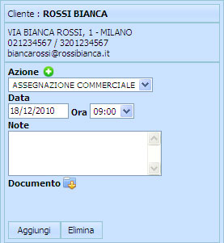
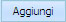

Per aggiungere una Azione cliccare sull'icona  e si attiverà il campo Azione
e si attiverà il campo Azione
Le Azioni vengono impostate nella sezione Setup alla scheda Processi.
Altri campi riferiti all'Azione che si aggiunge:
Data - cliccando nel campo della Data scegliere dal calendario la data desiderata Ora - cliccando nel campo Ora scegliere dal menu a tendina Note - cliccando nel campo Note sarà possibile inserire una descrizione Documento - cliccando su sarà possibile caricare degli allegati
L'Azione verrà salvata cliccando sul tasto 